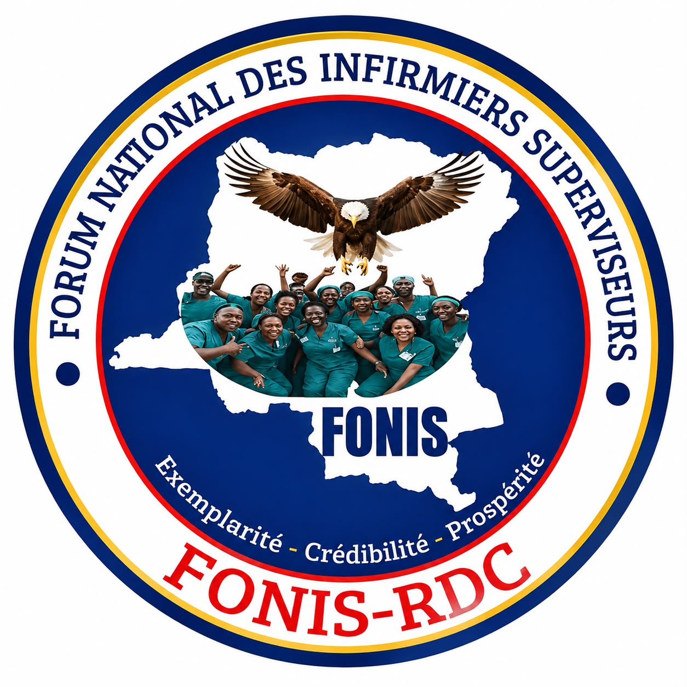

Unir les infirmiers superviseurs de tout le pays
Un espace d'échange, d'information et de renforcement des compétences pour les infirmiers superviseurs de la RDC, au service d'un système de santé plus fort.

Fabrice Fuamba
President National
Un réseau national fort d'infirmiers superviseurs contribuant activement à l'amélioration du système de santé en République Démocratique du Congo.

Nos ambitions
Quatre engagements qui guident chacune de nos actions, du terrain jusqu'au niveau national.
- Unir Tous les infirmiers superviseurs de la RDC, dans toutes les provinces.
- Partager Les bonnes pratiques et les expériences vécues sur le terrain.
- Former Les membres pour améliorer le suivi des équipes soignantes.
- Plébisciter Le rôle essentiel de la supervision dans les centres de santé et les hôpitaux.
Ce que vous trouverez ici
Tout ce dont un infirmier superviseur a besoin pour rester informé, formé et connecté.
Actualités
Les dernières nouvelles du forum et de la santé en RDC.
Consulter →Ressources
Guides de supervision, fiches techniques et outils à télécharger.
Consulter →Formations
Dates de nos prochains séminaires et ateliers de partage.
Consulter →Espace Membre
Un lieu pour échanger avec vos collègues des autres provinces.
Consulter →Actualités
Exemple d'actualité — à remplacer par votre contenu
Ce bloc est un exemple. Remplacez-le par vos véritables communiqués et nouvelles du forum.
Exemple d'actualité — à remplacer par votre contenu
Ajoutez ici vos actualités sur la supervision des soins et la santé publique en RDC.
Exemple d'actualité — à remplacer par votre contenu
Publiez les nouvelles de vos coordinations provinciales et zones de santé.
Rejoignez le Forum National
Votre engagement sur le terrain change des vies chaque jour. Inscrivez-vous en quelques minutes pour rejoindre le réseau.